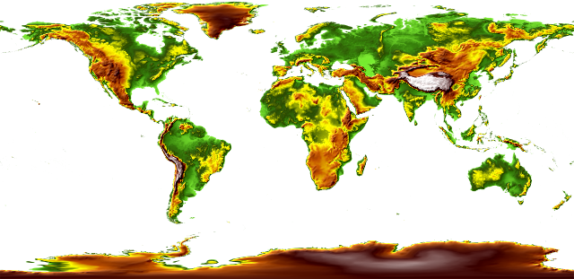

OGC API - Maps
Audience
Students that are familiar with web services and APIs, and want to have an overview of OGC API - Maps standard
Learning Objectives
At the completion of the module students will be able to:
- Explain what the OGC API - Maps standard is
- Describe what can be done with OGC API - Maps implementations
- Understand the main resources offered by OGC API - Maps implementations
- Understand how to retrieve a description of the capabilities of an OGC API - Maps implementation
- Understand how to issue requests to an implementation of OGC API - Maps
- Be able to find an OGC API - Maps endpoint and use it through a client
Introduction
OGC API - Maps is a standard that describes an API that presents data as maps by applying a style. The standard allows a client application to request maps as images, or change parameters such as size and coordinate reference systems at the time of request, making them implementer-friendly and easily understandable by developers without geospatial experience.
Note
This tutorial module is not intended to be a replacement to the actual OGC API - Maps - Part 1: Core standard. The tutorial intentionally focuses on a subset of capabilities in order to get the student started with using the standard. Please refer to the OGC API - Maps - Part 1: Core standard for additional detail.
Background
History
OGC API - Maps standard work was started in 2019. It has been developed in relation to OGC API - Tiles in support of providing both dynamic maps and map tiles.
Versions
OGC API - Maps - Part 1: Core version 1.0.0 is the current latest version
Test suite
There are no test suites currently implemented; they will be made available once the specification is approved, and an executable test suite (ETS) is made availabe as per of OGC CITE.
Implementations
Implementations can be found on the implementations page.
Usage
Relation to other standards
OGC Web Map Service Interface Standard (WMS): The WMS standard is a long standing and arguably the most well known and utilized OGC standard.
more appropriate when working with client applications that only support classic OGC Web Services. Note as well that WFS adopts the Geography Markup Language (GML) as a default data format. In contrast, OGC API - Features includes recommendations to support HTML and GeoJSON as encodings, where practical. Implementations of OGC API - Features may also optionally support GML, as well as other vector formats.
Overview of Resources
OGC API - Maps - Part 1: Core defines the resources listed in the following table.
Note
This deep dive focuses on the "Collection Maps" Requirement Class of OGC API - Maps. "Dataset Maps" is not included at this time.
| Resource | Method | Path | Purpose |
|---|---|---|---|
| Landing page | GET | / | This is the top-level resource, which serves as an entry point. |
| Conformance declaration | GET | /conformance | This resource presents information about the functionality that is implemented by the server. |
| API definition | GET | /api | This resource provides metadata about the API itself. Note use of /api on the server is optional and the API definition may be hosted on completely separate server. |
| Collections | GET | /collections | This resource lists the collections that are offered through the API. |
| Collection | GET | /collections/{collectionId} | This resource describes the collection identified in the path. |
| Collection maps in the default style | GET | /collections/{collectionId}/map | This resource presents the map associated with the collection using the default style. |
| Collection maps | GET | /collections/{collectionId}/styles/{styleId}/map | This resource presents the map associated with the collection using an applicable style. |
Example
This demonstration server publishes geospatial data through an interface that conforms to OGC API - Maps.
An example request that can be used to retrieve data from the MapServer WMS demo collection is https://demo.pygeoapi.io/master/collections/mapserver_world_map/map?f=png
Note that given the scope and purpose of OGC API - Maps, the response to the request is a raw PNG image and not raw data.
Resources
Landing page
Given OGC API - Maps uses OGC API - Common as a building block, please see the OGC API - Features deep dive for a detailed explanation of an example implementation.
Conformance declarations
Given OGC API - Maps uses OGC API - Common as a building block, please see the OGC API - Features deep dive for a detailed explanation of an example implementation.
API Definition
Given OGC API - Maps uses OGC API - Common as a building block, please see the OGC API - Features deep dive for a detailed explanation of an example implementation.
Collections
Given OGC API - Maps uses OGC API - Common as a building block, please see the OGC API - Features deep dive for a detailed explanation of an example implementation.
OGC API - Maps collection descriptions provide a number of optional properties, including:
- data type: a description of the underlying data supplied by the map (vector, coverage, map)
- min and max scale denominator: minimum and maximum scale denominator for usage of the collection as a map
Below is an extract from the response to the request https://demo.pygeoapi.io/master/collections?f=json.
{
"id": "mapserver_world_map",
"title": "MapServer demo WMS world map",
"description": "MapServer demo WMS world map",
"keywords": [
"MapServer",
"world map"
],
"links": [
{
"type": "text/html",
"rel": "canonical",
"title": "information",
"href": "https://demo.mapserver.org",
"hreflang": "en-US"
},
{
"type": "application/json",
"rel": "root",
"title": "The landing page of this server as JSON",
"href": "https://demo.pygeoapi.io/master?f=json"
},
{
"type": "text/html",
"rel": "root",
"title": "The landing page of this server as HTML",
"href": "https://demo.pygeoapi.io/master?f=html"
},
{
"type": "application/json",
"rel": "self",
"title": "This document as JSON",
"href": "https://demo.pygeoapi.io/master/collections/mapserver_world_map?f=json"
},
{
"type": "application/ld+json",
"rel": "alternate",
"title": "This document as RDF (JSON-LD)",
"href": "https://demo.pygeoapi.io/master/collections/mapserver_world_map?f=jsonld"
},
{
"type": "text/html",
"rel": "alternate",
"title": "This document as HTML",
"href": "https://demo.pygeoapi.io/master/collections/mapserver_world_map?f=html"
},
{
"type": "image/png",
"rel": "http://www.opengis.net/def/rel/ogc/1.0/map",
"title": "Map as png",
"href": "https://demo.pygeoapi.io/master/collections/mapserver_world_map/map?f=png"
}
],
"extent": {
"spatial": {
"bbox": [
[
-180,
-90,
180,
90
]
],
"crs": "http://www.opengis.net/def/crs/OGC/1.3/CRS84"
}
}
}
Note
An HTML representation can be viewed if changing f=html or not specifying the f parameter when working throgh a web browser.
In the links array, notice the link with the link relation (rel) of http://www.opengis.net/def/rel/ogc/1.0/map. This link
relation informs the client that the link is an OGC API - Maps interface that provides either a default map (href) or a map
with various query parameters applied.
Collection
Given OGC API - Maps uses OGC API - Common as a building block, please see the OGC API - Features deep dive for a detailed explanation of an example implementation, as well as the Collections description.
To inspect the specific collection, run the request https://demo.pygeoapi.io/master/collections/mapserver_world_map?f=json.
Collection maps in the default style
Let generate a map from the collection using the link in the above extract:
https://demo.pygeoapi.io/master/collections/mapserver_world_map/map

The request above asks the OGC API - Maps server to generate a default map as determined by the server. In this case, the default is a map of the world with a pixel width of 500 and height of 300.
Additional parameters can be added to the map URL with specific width, height and area of interest.
To clip the map to a desired area of interest (for example, India), use the bbox parameter:
https://demo.pygeoapi.io/master/collections/mapserver_world_map/map?f=png&bbox=69,7,99,37
To adjust the map's dimensions, use the width and height parameters:

Collection maps
To demonstrate an OGC API - Maps implementation, this demonstration server provides a list of styles for a given dataset at https://test.cubewerx.com/cubewerx/cubeserv/demo/ogcapi/Foundation/collections/gtopo30/styles?f=json.
Each style within the collection can then be requested as a map as follows (using the colorShaded and desaturated styles):


Summary
The OGC API - Maps standard describes an API that presents data as maps by applying a style. This deep dive provided an overview of the standard and the various Resources and endpoints that are supported.